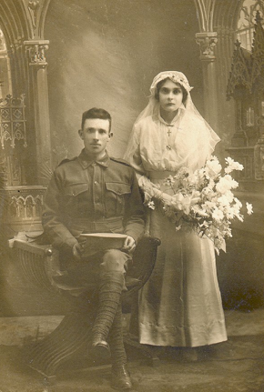
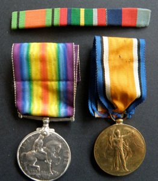

OSCAR ERNEST STAIT - WORLD WAR 1

Dad had not been well, he was recovering from a stroke and was depressed. I was thinking about this as I was going off to sleep. It brought up memories for me of him and his sad relationship with his father. I was thinking how distant Grandfather had been from Dad when I was a little child. Sometime during my sleep the word ‘Passchendaele’ was spoken in my head, loudly enough to wake me. This happened again before I woke in the morning.
I went to the internet and looked up the Australian War Memorial site and found that grandfather fought in the 5th Division AIF. I was aware that Passchendaele was a battle in WW1. I looked in books at school and emailed some WW1 experts and they told me that the 5th Division could have fought at Passchendaele.
I rang Dad and asked him if he knew if Grandfather had fought there and he said he didn’t know but he remembered him talking about fighting for Hill 49, or something like that, and that sometimes they would win ground and then be driven back, the futility of war in a sense. These battles went on over a long period of time.
I vaguely recalled seeing a book named Passchendaele in Lismore so next time we went to Lismore I found it. I flipped through it and found a map with Hill 40 on it. It confirmed to me that Grandfather had indeed fought at Passchendaele and in some strange way he had been in touch with me. Later I discovered that the Polygon Wood Offensive was part of the battle for Passchendaele.
Two weeks later Auntie Marj, his only daughter and Dad’s only sister died. I now knew that Grandfather would be there for her and also Dad when his time came.
23rd June 2003
Margie Brace

What you should know
On enlistment, Oscar Ernest Stait served with the A Company Depot 54th Battalion at Bathurst, NSW from 25 Jul 1916. On 25 October 1916, Oscar Stait, along with the 7th Reinforcements of the 54th Battalion, left Sydney aboard HMAS ‘Ascanius’. They disembarked in Devonport on the 28 Dec 1916 and arrived in Hudcott, England on 2 July 1917. After a brief period of training in England he embarked at Folkestone on 3 July 1917 for the brief trip to France. They marched out to Le Havre on the 21 July and he was taken on the 54th Battalion's strength on 12 August 1917as a member of the 14th Brigade, 5th Division. Grandfather was a signaller. He had to go ahead of the front line and lay the cables for communication with the officers.
The 5th Division AIF were active in the Polygon Wood offensive in September 1917. Then in April 1918 the 5th Division AIF took part in the Villers Bretonneux offensive.
On 17 April 1918, the 54th Battalion was lying in readiness when the Germans unleashed a concerted gas barrage of an estimated 12,000 gas shells (including mustard, "sneezing gas" and phosgene) on the villages of Villers-Bretonneux and Bois l'Abbe.
Oscar suffered severe exposure to mustard gas and was wounded in action. He was admitted to L. of C. Hospital on the 20th April 1918. His condition did not improve and he was transferred to Edgbaston, Birmingham General Hospital on the 23rd April, arriving there on the 24th April. His condition was listed as shell gas (severe). He was again transferred to the 3rd Auxiliary Hospital in Dartford on the 15th May and returned to duty on the 21st May, 1918.
On the 9 July 1918 he was transferred as Private in Command to the 5th Division Signals of the 14th Battalion and sent for a course of instruction with the 6/Seas Engineering Brigade. On the 28th September 1918 he was charged with being Out of Bounds in Salisbury and docked 7 days pay.
He was then transferred to the reinforcements of the 56th Battalion on the 29th September 1918. He was again transferred to the 3rd Battalion on the 10th October and the 53rd Battalion on the 22nd November 1918. On the 23 November he was charged with being AWOL and lost 7 days pay.
He was discharged from the A.I.F. on 9th June 1919, ex “Kashmir” T.P.E.
a strange dream
